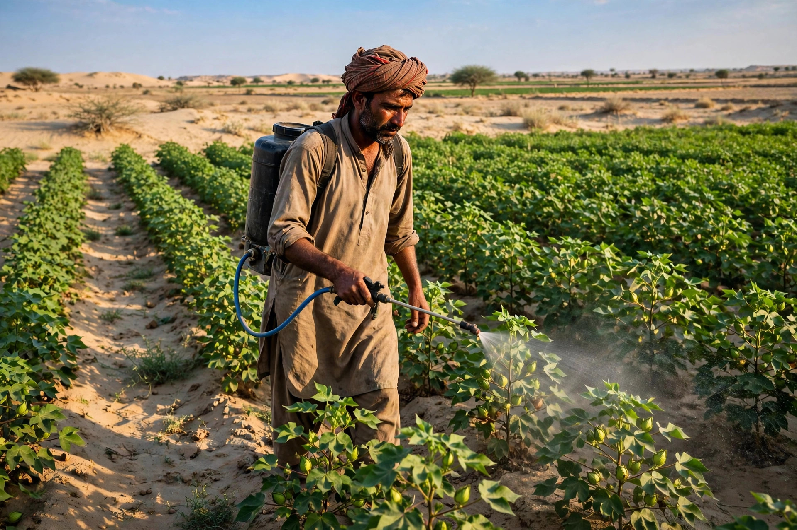
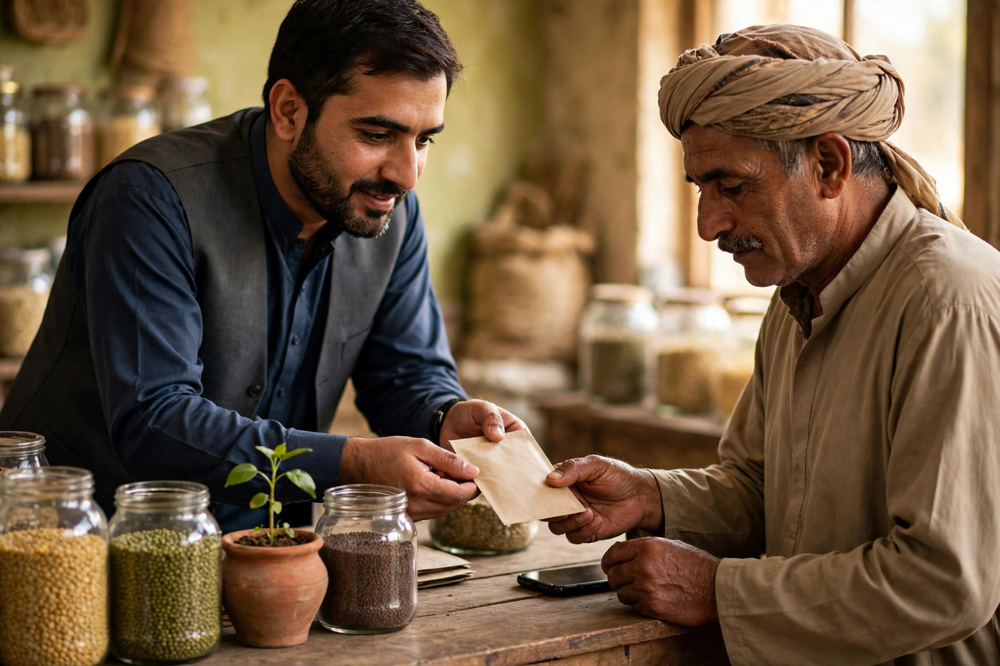

Chobara sits in an agricultural part of Layyah district. For dealers in seed, fertiliser and crop protection, and for services linked to farming, the customer is often a grower making a time-sensitive decision. When a crop needs treatment or sowing cannot wait, the grower does not browse for entertainment. He searches, calls, confirms availability and travels. SEO for this trade is about being the dealer who can be found and contacted in that short window.
This guide explains the practical steps for agri businesses in Chobara. Help with the work is described on our SEO services for Chobara page. Zaheer Seo Expert is based in Layyah and has no office in Chobara. Chobara clients are served from Layyah, with all work done online and by phone, so distance is not a barrier for a dealer or a service provider either.
Seasonal Demand Shapes Agri Searches
Unlike a general store, an agri business feels demand in waves. Enquiries rise before sowing, during fertiliser application periods and when pest pressure appears. Searches follow the same pattern. A grower may search for a seed variety type, a fertiliser type or a spray for a specific problem, often adding the town name or simply searching while in the area.
Your online pages should reflect that rhythm. Prepare clear pages for each major range before the season starts, not during the rush. A page explaining your seed range in general terms, which crops you commonly supply seed for, and how a farmer can confirm current stock by phone will serve you better than rushed updates posted when the shop is already full.

Set Up the Profile for How Farmers Actually Buy
Your Google Business Profile should make a phone call effortless. Farmers often search on basic phones, sometimes with help from a younger family member. The profile needs the correct category for your main trade, an accurate pin at the shop or godown entrance, and a number that is answered during business hours, including early mornings in peak season if that is genuinely when you open.
List your ranges as services: seed, fertiliser, pesticide and any related service you truly provide, such as delivery arrangements to nearby villages where you actually offer them. Do not claim services you do not provide. In farming communities, a disappointed grower tells others quickly, and trust built over years can be lost over one misleading listing. Our overview of SEO for Chobara businesses explains profile basics that apply here too.
Website Pages for Each Range
Give each major range its own page rather than crowding everything onto the home page. A clear structure helps both Google and growers:
- Seed page: the crop types you commonly stock seed for and how to confirm availability for the coming season.
- Fertiliser page: the general types you carry and guidance to call for current stock and rates.
- Crop protection page: the kinds of problems you help farmers address, with a clear note that product advice is given in shop or by phone for their specific crop condition.
- Services page: any genuine extra service, such as arranging transport or serving retailers in surrounding villages.
Write these pages in plain language a grower would use. Avoid copying company brochures word for word. Your own explanation of what you stock, who it suits and how ordering works is more useful and more original. Thoughtful keyword research helps choose the headings farmers actually search for, without stuffing brand names you may not stock into every line.

Trust, Safety and Honest Information
Agriculture inputs involve real money and real risk for a farming family. Your website should never promise crop results, yields or outcomes. Describe products in general terms, encourage farmers to follow label instructions, and invite them to discuss their field condition before buying treatment products. This honest approach protects customers and also protects your business reputation.
Photos help here as well. Show the real shop, the storage area and the ranges on your shelves. A grower travelling from a surrounding village wants to be sure the trip is worthwhile and that he is heading to a genuine, stocked business. Real photos answer that concern better than any slogan.
Reaching Growers in Surrounding Villages
Many of your customers do not live in Chobara town itself. They live in villages around it and travel in for inputs. Your pages can mention, truthfully, that you serve farming customers from the surrounding villages who visit Chobara market, without pretending to have branches there. That distinction matters: one real shop, clearly located, serving a wider farming area.
Reviews from growers often mention whether stock was available, whether advice was patient, and whether dealing was fair. Invite honest reviews after a completed purchase, especially after a busy season when satisfied customers are many. Reply with thanks and keep replies short and respectful.

Staying Visible Between Seasons
Quiet months are the right time to fix the basics: update photos, correct pages, check that every phone number online still matches, and prepare content for the next season. A dealer who does this steady work enters sowing season already visible, while competitors are still invisible or showing last year wrong hours. SEO rewards that consistency because Google and customers both prefer information they can rely on.
Start with the profile and the range pages, keep them truthful, and let the seasons build on a solid base. That is how an agri business in Chobara turns urgent seasonal searches into phone calls, visits and long-term farming relationships.
Frequently Asked Questions
How do farmers around Chobara search for agri dealers?
Many search by product type and town, or tap a dealer name they heard to find the phone number. Clear categories, stock groups and a working number matter more than long articles.
Should a dealer publish prices on the website?
Prices that change often can mislead customers if they are not updated. Many dealers describe product groups and invite farmers to call for current rates instead of posting prices that go stale.
Can one profile cover seed, fertiliser and spray ranges?
Yes, if the business genuinely sells all three. List each range as a service, choose the best main category, and use separate website pages to explain each range clearly.
Does Zaheer Seo Expert have an office in Chobara?
No. Zaheer Seo Expert is based in Layyah and serves Chobara agriculture businesses from there. Work is done online and by phone, so farmers and dealers do not need to travel.
Want More Customers From Google?
Call 0327 7350830 or email seozaheer14@gmail.com. Zaheer Seo Expert, Layyah - Rajan Shah Road, Rana Nagar, Chak 116 TDA, Pakistan. Open 24 hours.
Get Your SEO Strategy →